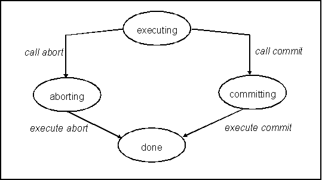
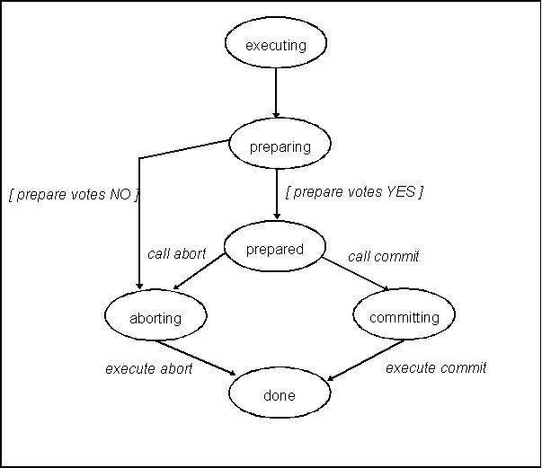
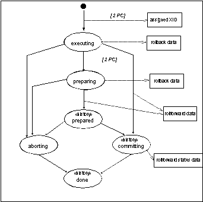

|
|
|
|
Christoph Schmidt-Casdorff
— Version 1.2 (09.06.2008)Stand: 09.02.2004—
Diese Seite nicht
bearbeiten!
Angaben werden aus den Dokumenteigenschaften
übernommen!
|
Aktueller Stand: |
|
Datum |
Bearbeiter |
Änderungen |
|
09.02.2008 |
Christoph Schmidt-Casdorff |
Erstellung |
|
09.06.2008 |
Christoph Schmidt-Casdorff |
Überarbeitung |
Technologischer Kontext 3
Transaktionssteuerung 3
Zustandsübergänge einer TA-gesicherten Resource 3
Persistenzsysteme 4
Anforderung an Zustandsprotokollierung 5
Logging in presumed abort Algorithmus 6
Rollback- / Recorveryinformationen 7
JTA - Java Transaction Architecture 9
Kommunikation zwischen TA-Mamanager und XAResource 10
XID - was und warum 10
isSameRM 10
Überlagernde TX an einer XAResource 10
Locale und globale Transaktionen 10
Thread of Control 10
Serialisierung der XID 11
Phynixx – der Plan 12
Phynixx – das Projekt 13
Projektstruktur in Eclipse 13
PhynixxConnection 14
Referenzimplementierung 14
RecordLogging 15
PhynixxConnectionProxy 20
all together – Integration aller Komponenten 20
XA resource – phynixx-xa 21
Timeoutüberwachung 21
Glossar 23
Bibliography 25
In [gupta-1997] Kap 3.2.1 sind die Zustandsübergänge einer transaktionsgesicherten Ressource in einem 1/2 phase commit Protokoll beschrieben. (Abort(ing) entspricht dem gängigeren rollback(-ing).)
Bzgl. des 1 phase commit protocols lassen diese wie inAbbildung 1 reduzieren.

Abbildung 1 Zustandsübergänge bei 1 Phase Commit

Abbildung 2 Zustandsübergänge bei 2 Phase Commit
Diese beiden Zustandsübergange sind Grundlage für die weiteren Diskussionen.
Persistenzsysteme ohne eigene Transaktionssematik (Filesysteme, einige Archivsysteme (centera)) müssen bei ihrer Einbettung in eine Transaktionssystem unterstützt werden. Die Informationen, um ggf. rollback durchführen zu können, müssen außerhalb des Peristenzsystems protokolliert werden.
Bzgl. der benötigten Informationen zur Durchführung eines rollbacks können 3 Systeme unterschieden
werden
Persistenzsysteme mit Transaktionssemantik (Datenbanken, JMS)
Persistenzsysteme, bei denen zum rollback Zustandsinformationen zu Beginn der TX reichen (z.B. sequentielle Schreiben in Dateien)
Persistenzsysteme, bei denen die einzelnen Veränderungen des Systems protokolliert werden und im 'Rollback'-Fall einzeln und in umgekehrter Reihenfolgen zurückgesetzt werden müssen (z.B.Archivsysteme wie Centera, Filesysteme) (Kompensationsverfahren)
Bei Typ 3 müssen die notwendigen Informationen (im weiteren LogRecord) protokolliert werden. Bevor eine Aktion ausgeführt wird, werden ausreichende Informationen protokolliert, um diese Aktion invertieren zu können. Diese Informationen werden beim rollback der TX oder beim recovery genutzt.
Recovery tritt dann auf, wenn die Transaktionssteuerung während der TA abbricht und das Persistenzsystem in einem undefinierten Zustand zurückläßt. In diesem Fall müssen die LogRecords restauriert werden und auf Basis dieser LogRecords das Persistenzsystem in einen in einen definierten Zustand überführt werden.
Befand sich das Persistenzsystem beim Abbruch bereits in der committing phase, so kann natürlich nicht mehr rollbacked werden, ( da typischer Weise Veränderungen während des commit per Definition nicht mehr invertierbar sind,) sondern das commit muss zu Ende gebracht werden. Es erfolgt ein sogenanntes rollforward .
Die unterschiedlichen Zustände und die in den Zuständen/Zustandsübergängen erzeugten Steuerungsinformationen werden in LogRecord abgelegt. An dieser Stelle wird nichts über das Verfahren zur der Protokollierung der LogRecord ausgesagt.
Diese LogRecords müssen bestimmte Bedingungen erfüllen
Die Aktionen müssen auf dem Persistenzmedium invertierbar sein. Ausnahme sind Aktionen, die während des commits ausgeführt werden.
Bei Archivsystemen ist es nicht ohne weiteres möglich, Einträge zu verändern. Das macht ja gerade ein revisionssicheres Archivsystem aus. Ist dem Eintrag eine Verweildauer zugewiesen, während de nicht verändert werden darf, so ist diese Aktion nicht mehr invertierbar.
Die Aktionen müssen idempotent sein, d.h. eine mehrfache Ausführung der Invertierung muss immer zum selben Ergebnis im Persistenzsystem führen. Dies ist wichtig, wenn beim recovery Probleme auftreten und das recovery eventuell wiederholt werden muss. Auch falls die Aktion loggt wurde, kann sie gar nicht oder nur teilweise durchgeführt worden sein. Auch in diesem Fall muss das Recovery gelingen und den Zustand vor Schreiben des LogRecords wiederherstellen.
Die committing phase wird beim Recovery nicht invertiert, sondern zum vollständigen Abschluss gebracht ( roll forward ). LogRecords und zugrunde liegende Aktionen dieser Phase müssen dies unterstützen. Dabei ist ebenfalls zu berücksichtigen, dass die Aktionen auch nur teilweise durchgeführt wurden.
Beim 2 phase commit werden während der preparing phase Aktionen ausgeführt, die in einem nachgeordneten rollback explizit invertiert werden müssen. Was passiert, wenn von den z.B. 3 Kommandos in der preparing -Phase die ersten 2 gelingen und das 3-te fehlschlägt. Da die ersten beiden i.d.R. den Zustand des Persistenzmediums verändert haben, müssen sie explizit invertiert werden, um den Zustand vor dem prepare wiederherzustellen. Auf diesem setzt der Transaktionmanager bei seinen weiteren Bemühungen auf.
Dies ist aber möglich, da während preparing keine irreversiblen Aktionen durchgeführt werden. Während der prepare phase werden also ebenfalls einzelne rollback LogRecords protokolliert.
Übel ergeht es dem Persistenzsystem, wenn während der committing phase abgebrochen wurde. Da es kein Zurück gibt, muss ein recovery während eines Abbruchs in der committing phase die TX zu Ende bringen.
Dazu müssen aber die benötigten Informationen zur Verfügung stehen. Diese mussten also vor dem Abbruch en block protokolliert worden sein.
Im Gegensatz zu rollback LogRecords , die einzelne protokolliert werden können, werden rollforward LogRecords en block vor beginn der commtting phase protokolliert. Falls der Fortschritt des commits protokolliert werden muss, um ein recorvery steuern zu können (bis wohin ist das commit tatsächlich bereits ausgeführt worden?) sind evtl. so genannte rollforward status LogRecords protokolliert.
Im Umkehrschluss folgt daraus, dass irreversible Aktionen nur in der committing phase zum Tragen kommen, denn ein Fehler/Abbruch während dieser Phase führt beim recovery zum roll forward .
In vielen Fällen kann man sich mit dem so genannten mit dem Verfahren helfen, das in the Last-Resource Gambit bezeichnet wird. Die Transaktionssteuerung weiß um die einzelnen Charakteristika der Persistenzsysteme und stellt ihre Verarbeitungslogik darauf ein.
Ist z.B. nur ein nicht XA-kompatible Persistenzmedium an der Transaktion beteiltigt, so wird nachdem prepare an alle anderen beteiligten Resourcen das commit der Nicht-kompatiblen gerufen und anschließend das commit der XA-Resourcen.
Dieses Verfahren löst zwar auch nicht das oben beschrieben Problem der irreversiblen Aktionen, die während des prepare-Phase fehlschlagen, aber dasjenige des rollbacks nach erfolgreicher prepare-Phase.
Das presumed abort - Algorithmus ist in definiert.
„As described in the previous section, the 2PC protocol requires transmission of several messages and force-writing of several log records. A variant of the 2PC protocol, called presumed abort (PA), attempts to reduce these overheads by requiring all cohorts to follow a "in the no information case, abort" rule.“
presumed abort bedeutet als Konsequenz, dass der TM nur TX vor und während der eigenlichen committing phase ( prepare,commit ) protokollieren muss. Insbesondere müssen weder rollback-Records noch Informationen vor der committing phase geloggt werden. Es werden ebenfalls keine Informationen für TX geloggt, die zu 1PC optimiert wurden.
Dieses Verfahren setzt im Falle eines Abbruchs voraus, dass alle eingesetzten RM in der Lage sind, ihre Resourcen zu restaurieren (recover). Der TM übernimmt nur eine Koordination der abgebrochenen TX, wenn diese während der committing phase ( 2PC mit prepare/commit) abgebrochen ist.
Ein Logging-Verfahren, dass diese Eigenschaft unterstützt, hat im wesentliche folgende Funktionalität.
Bevor ein Commit-gestartet wird, werden alle beteiligten XAResourcen geloggt, so dass diese beim Wiederanlauf referenzierbar sind.
Es werden keinerlei inhaltliche Informationen über den XAResourcen durch den TM geloggt. Diese ist Aufgabe des RM.
Falls die commiting phase erfolgreich abgeschlossen wird, so sind die log-Informationen (siehe 1) unnötigt und könnten gelöscht werden
Falls der TM während der commiting phase abstürtzt, so kann auf Basis der commit-Logs die Situation zum Zeitpunkt das Abbruchs wiederhergestellt werden. Dies allerdings nur aus Sicht des TMs (siehe unten).
XAResourcen müssen ihre TX-Informationen, die zur Integration in die TX notwendigen Informationen wie XID) erst ab der prepare-Phase loggen. Zuvor allerdings müssen evtl. Informationen für recovery/rollback geloggt werden.
Wiederherstellung einer XAResource umfasst auch die Informationen, um die Referenz des TM auf diese XAResource (siehe 1) aufzulösen. Dazu ist in der Regel zu untersuchen, wie der gewählte TM die XAResource referenziert (z.B. via toString() wie JOTM).
XAResource.recover() liefert alle wiederherstellbaren XAResources des RM. Dabei können diejenigen, die nicht an wiederherstellbaren TX beteiligt sind, ignoriert werden.
Ein Logging-Verfahren, dass diese Eigenschaft unterstützt, hat im wesentliche folgende Funktionalität.
performantes und konkurriendes Logging (selbstverständlich)
Bündelung der Records der committing phase , nur ein I/O-Zugriff pro Start einer committing phase
Ignorierung/Löschen/Überscheiben von Logrecords, die zu erfolgreich abgeschlossenene TX gehören. Diese sollen im Log keinen Platz blockieren.
Ein hinsichtlich dieser Anforderungen optimiertes Loggingsystem ist offensichtlich nicht optimiert,
recovery/rollback -Informationen für eine XAResource zu unterstützen. Dort muss die Bündelung nicht auf Basis der Records der Committing Phase sondern bzgl. aller während einer TX angefallenen Daten geschehen. ist die TX abgeschlossen, so sind diese gebündelten Records freizugeben.
In [mike_spille-2004] sind Szenerien für Recovery aus Sicht eines transaction managers durchgespielt. Aus Sicht einer XAResource sind andere Szenarien zu betrachten und andere Lösungsansätze zu untersuchen.
Eine XAResource wird zu einem Recoveryfall, wenn einer der folgenden Situationen eintritt
XAResource verabschiedet sich undefiniert aus der TX
Ausführungsthread/ -prozess stirbt
Verbindungverlust zu Servern (Datenbanken,..)
Plattencrash, Stromausfall oder ähnliche apokalyptische Szenarien
TransactionManager verabschiedet sich undefiniert
Ausführungsthread/ -prozess stirbt
Plattencrash, Stromausfall oder ähnliche apokalyptische Szenarien
Recovery im Umfeld von XA hat zwei unterschiedlichen Aspekte. Zum ersten muss das Persistenzsystem wiederhergestellt werden. Dieser Vorgang ist unabhängig von der Beteiligung der Resource an einer DTX.
Falls das Persistenzsystem an einer DTX beteiligt war und die Beteiliung wieder reaktiviert werden muss (nur Zustand prepared ), so hat sich das restaurierte Persistenzsystem beim Transaktionsmanager für die entsprechende DTX anzumelden.
Für den Transactionsmanager ist eine XAResource nur dann beim recovery interessant, wenn diese an einer TX teilgenommen hat, deren prepared+committing phase wiederhergestellt wird. Ansonsten weiß der Transaktionmanager (siehe presumed abort ) nichts über die XAResource und diese kann sich isoliert restaurieren und rollback durchführen.
Falls diese während der executing oder preparing phase stecken geblieben ist, so hat der recovery Mechanismus des Resourcemanagers für ein korrekte Wiederherstellung des Persistenzsystems zu sorgen.
Wie kann also ein Verfahren aussehen, welches für eine Ressource einerseits WAL unterstützt, andererseits die Zustände bzgl. einer 2PC-TX und 1 PC-TX protokolliert. Es scheint mir sinnvoll, nur ein logging Verfahren zu etablieren und für die unterschiedlichen Zwecke verschiedene Verfahren aufzusetzen.
In [gupta-1997] Kap 3.2.1 sind die Zustandsübergänge einer XAResource in einem 2PC Protokoll beschrieben. Für ein Recovery ist es grundsätzlich ausreichend, die Zustände preparing , prepared, committing und aborting zu sichern. Implizit läßt daraus der Zustand executing ableiten. Kenntnisse des Zustands der XAResource und die LogRecords versetzen die XAResource in die Lage, sich zu restaurieren.
Beim Ausgangszustand committing oder aborting kann es natürlich sein (es ist sogar die Regel) , dass nichts zu tun ist, um die XAResource wiederherzustellen, da die Aktionen korrekt abgeschlossen wurden.
Dies kann nur festgestellt werden, wenn der Abschluß der TX durch einen done -Record markiert wird. Anhand des Endezustands kann der Recoverymanager erkennen, dass kein Recovery notwendig ist und das Loggingsystem, dass LogRecords solcher XAResourcen vergessen werden können.
Der Ausgangszustand committing (ohne abschliessendes done) bedingt ein roll forward . Der Ausgangszustand aborting bedingt ein rollback . Unter Annahme, dass 'keine Informationen' mitabort gleichzusetzen sind (presumed abort ), ist der Zustand aborting nicht explizit zu protokollieren, sondern wird wie der Ausgangszustand executing behandelt. Gleiches gilt für preparing .
Daraus ergibt sich, dass die Zustände prepared, committing und done protokolliert werden. Mit den Zuständen müssen auch immer alle Informationen geloggt werden, die notwendig sind, die avisierten Zustandübergänge auch durchzuführen. Die XAResource muss auch beachten, dass die
Zustandsübergänge bereits teilweise durchgeführt sind. Sie muss dies erkennen können und adäquat darauf reagieren.
Bricht die XAResource während executing oder preparing ab, so ist keiner der obigen Zustände protokolliert. Was zu tun wäre ist klar.
Falls die XAResource während der executing phase abgebrochen ist, so ist eine rollback durch zuführen. Ist sie dagegen während der preparing phase abgebrochen, ist zu erwarten, dass die XAResource untersucht, ob es eine wiederhergestellte, globale DTX gibt, an der sie teilnehmen kann. Die XAResource wird dieser übergeben, allerdings im Zustand MARK_ROLLBACK. Dadurch ist gewährleistet, dass alle an der TX beteiligten XAResourcen rollbacked werden.
Da allerdings bei Transaktionmanagern die den Recoveryprozess gemäß presumed abort unterstützen, globale Transaktionen, welche in der preparing phase abbrechen, nicht als recoverable protokollieren, ist es nicht notwendig, die aufwendige Sonderbehandlung für die Fall vorzusehen. Auch in diesem Fall kann also der Recoverymanager des XAResource ein rollback durchführen.
Insbesondere wird der Zustand preparing nicht protokolliert.
Um all die Zustandsinformationen einer TX zuordnen zu können, muss beim Beginn der Beteiligung der XAResource an der TX (Eintritt in executing ) protokolliert werden, mit welcher Identität die XAResource an welcher TX ( identifiziert durch XID) teilnimmt. Dieser TX-Informationen müssen auch allen weiteren LogRecords zugeordnet sein, die sich auf diese XAResource innerhalb dieser TX beziehen.
Stößt der Recoverymanager auf eine XAResource eines solchen Zustands, so zeigt folgende Tabelle, wie zu reagieren ist:
|
erster Satz bei XAResource (nur bei XAResource bei Beteiligung an 2PC) |
Um die XAResource der TX zuzuordnen, sind aus dem erstem LogRecord sowohl Identität der XAResource (zur Registrierung beim Transaktionsmanager) und XID zu ermitteln. |
|
Prepared |
Da XAResource für den Transaktionsmanager in Bezug auf recovery nur nur im Zustand prepared / committing interessant sind, muss sich die XAResource an den TX der wiederhergestellten globalen TX beteiligen , um den TransaKtionsmanager die TX geordnet abzuschliessen. |
|
committing |
Nimmt die XAResource am 2PC teil, so siehe prepared . Ansonsten wird das commit vollständig zu Ende geführt. |
|
keiner der obigen Zustände |
XAResource führt abschliessende Arbeiten aus, um dass rollback/abort abzuschliessen. Es ist keine globale TX notwendig, innerhalb derer die XAResource rollbacked werden muss. |
Folgende Grafik zeigt welche Informationen während welches Zustands bzw. während welches Übergangs
protokolliert werden können.

Abbildung 3 Zustandsübergänge bei 2 Phase Commit
Wie aus dem JDBC Umfeld bekannt ist, wird der Zugriff auf eine Datenbank durch eine sogenannte Connection bereitgestellt.
Dieser Begriff wird in diesem Dokument weiter gefasst und bezeichnet allgemein den Zugriff auf ein Persistenzmedium, welche sich als XAResource darstellen möchte.
Ziel des Projekts phynixx ist es, eine allgemeines Persietenzmedium vollständig in die Javawelt und die dortige Persistenzverfahren einzubetten.
Zustandsprotokollierung/Kompensationsverfahren
XA Implmentierung
JCA Connector (noch nicht realisiert)
Um an diesen verfahren teilzunehmen , ist eine allgemeine Connection zum jeweiligen Persistenzmedium bereitzustellen. Diese wird sukzessive um die oben beschrieben Funktionalitäten generisch erweitert. Als Metapher kann eine Verbindung zu einer Datenbank in Form einer JDBC-Connection dienen.
Connections eines Persistenzmediums müssen das IF IPhynixxConnection implementieren. IPhynixxConnections werden durch ConnectionFactories bereitgestellt
Phynixx hat sich zur Aufgabe gestellt, Persistenzsystemen die Möglichkeit zu geben , sich transaktional zu verhalten und sich darüber hinaus in Persistenzstandards im Java Umfeld wie XA oder JCA einzubetten.
|
Thema |
Projektpfad |
Beschreibung |
|---|---|---|
|
|
phynixx-doc |
Dokumentation |
|
|
phynixx-assembly |
Maven-build-lifecycle umd alle Kompoennten zu packen |
|
|
phynixx-base |
Definiert den Eltern-Lifcycle für den maven-build-lifecycle aller Kompoenneten |
|
|
phynixx-common |
Allgemeine Funktionalität wie logging etc |
|
PhynixxConnection |
phynixx-connection |
IPhynixxConnection, Zustandsprotokollierung und Kompensationsverfahren. |
|
|
phynixx-watchdog |
Überwachung von Timeouts |
|
|
phynixx-watchdog-jmx |
JMX-Anbindung von phynixx-watchdog |
|
|
phynixx-xa |
XA Implementierung |
|
|
|
|
|
|
|
|
|
|
|
|
|
|
|
|
|
|
|
|
Unter phynixx-connection/test/main/java findet sich in org.csc.phynixx.connection.reference eine Referenzimplementierung der Konzepte dieses Kapitels. Die dort vorgestellte Implementierung einer IPhynixxConnection wird im weiteren von Referenzimplementierungen genutzt.
ITestConnection erbt von IPhynixxConnection und implementiert eine denkbar einfache Geschäftslogik. Es wird eine interner Zähler gepflegt.
/**
*
the current implementation manages a internal counter which can
* be incremented
* @author christoph schmidt-cadorff
*
*/
public interface ITestConnection extends IPhynixxConnection,IRecordLoggerAware
{
/**
*
* @return current ID of the connection
*/
public Object getId();
/**
* increments the current counter
* @param inc
*/
public void act(int inc) ;
/**
*
* @return current counter
*/
public int getCurrentCounter();
}
Um an der Funktionalität von Phynixx teilzunehmen, muss eine Implementierung der Klasse IPhynixxConnection bereitgestellt sein.
Sie stellt zur Teilnahme an einer TA die klasisschen Methoden wie commit,. rollback, prepare. Soll auch der Mechanismus des RecordLoggings genutzt werden, muss ein weiteres Interface IRecordLoggerAware implementiert werden.
Neben diesen technischen Methoden zeichnet sich die konkrete Connection durch eigene Geschäftsmethoden aus. Diese müssen in einem von IPhynixxConnection abgeleiteten IF definiert sein.
Eigene Implementierung müssen dieses IF implementieren und ein IF bereitstellen.
Zu jeder eigenen Implementierung von IPhynixxConnection gehört auch eine entsprechende Factory, welche IPhynixxConnectionFactory implementiert.
RecordLogging beschreibt den Mechanismus, Informationen einer Connection für rollback, commit und recover zu protokollieren (Zustandspotokollierung und Kompensationsprotokollierung) und dieser zum geeigneten Zeitpunkt zur Verfügung zu stellen.
Die aktuelle Implementierung des Loggings wird mittels java.io.RandomAccessFile implementiert.
Die zu loggenden Daten werden binär gesichert. Die IPhynixxConnection hat für die De-/Serialisierung (Konvertierung in binäres Format) zu sorgen.
Die Schnittstelle einer Connection zum zu grunde liegenden Logger wird über IRecordLogger bereitgestellt. Der IRecordLogger ist für die anwendungsspezifischen Logging-Informationen zuständig (Kompensationsinformationen). Die Informationen über den Verlauf der TA (TA-Zustandsinformationen) werden systemseitig protokolliert, ohne dass sich die Connection darum kümmern muss.
public interface IRecordLogger {
/**
* logs the given data
*
* These data can be replyed to perform rollback
* If commitRollforwardData is called once
* this method can not be called any more
*
* @param data
*/
void writeRollbackData(byte[] data);
/**
* logs the given data to perform rollback
* If commitRollforwardData is called once
* this method can not be called any more
*
* @param data
*/
void writeRollbackData(byte[][] data);
/**
*
* logs the given data to perfrom rollforward
* If commitRollforwardData is called once
* this method can not be called any more
* @param data
*/
void commitRollforwardData(byte[][] data);
/**
*
* logs the given data to perfrom rollforward
* If commitRollforwardData is called once
* this method can not be called any more
* @param data
*/
void commitRollforwardData(byte[] data);
boolean isCommitting();
boolean isPrepared();
boolean isCompleted();
void replayRecords(ILogRecordReplay replay);
}
Eine Connection kann am verfahren des RecordLoggings teilnehmen, in dem sie das IF IRecordLoggerAware implementiert. Diese IF definiert getter/setter für einen IrecordLogger.
/**
* replays the messages in the correct order.
*/
public interface ILogRecordReplay {
/**
*
* @param record ILogMessage to be rollbacked
*/
void replayRollback(ILogRecord record);
/**
*
* @param record to be rollforwared
*/
void replayRollforward(ILogRecord record);
}
Die Referenzimplementierung soll folgende Buisnesslogik unterstützen.
Ein Zähler
kann initialisiert werden. Dieser Initiale Wert wird beim rollback
eingestellt. Dieser Wert kann beliebig oft initialisiert werden.
Jede Initialisierung wird protokolliert. Allerdings wird der letzte
Stand wiederhergestellt.
Der
initiale Zählerwert wird in setInitialCounter() als
rollback-Info bewertet und dem RecordLogger übergeben.
Dieser persistiert diesen und kann bei rollback oder recover
befragt werden.
Dieser Zähler
kann inkrementiert werden. Diese Inkremente werden allerdings nicht
unmittelbar, sondern erst während der commit Phase aus
geführt.
Sie werden als rollforward Data protokolliert, so
dass die commit Phase auch bei auftretenden Fehler wieder aufgesetzt
werden kann.
Die Referenzimplementierung nutzt den RecordLogging Mechanismus, um den Startwert des internen Zählers zu persistieren und ggf. bei rollback oder recover zurück zu erhalten.
Um im Fall von commit/rollback/prepare/recover die Informationen durch den Logger zu erhalten, muss diesem eine Implementierung des IF IlogRecordReplay übergeben werden. Die Logrecords werden in exakt der ursprünglichen Reihenfolge liefert. Außerdem wird zwischen rollback- und rollforward data unterschieden.
/**
*
* this reference implementation of a {@link IPhynixxConnection } shows how to
* implement your own recoverable connection
* The business logic is kept quite simple. A counter is set to an initial value.
* This value has to be restored when the connection is rollbacked or recovered.
*
*
* You can increment this value, but the incrememts are not performed immediately but
* are postponed to the commit phase.
* Bevor the increment is perormed all incre,ments are stored as rollforward data.
* If an exceptions is throws during the commit, these data are used to recover.
*
* @author christoph
*
*/
public class ReferenceConnection implements IReferenceConnection
{
public static final int ERRONEOUS_INC=Integer.MAX_VALUE;
private static final Integer ERRONEOUS_VALUE= new Integer(ERRONEOUS_INC);
private Object id= null;
private int counter= 0;
private volatile boolean close= false;
private List increments= new ArrayList();
private IPhynixxLogger logger= PhynixxLogManager.getLogger(this.getClass());
private IRecordLogger recordLogger= Dev0Strategy.THE_DEV0_LOGGER;
public IRecordLogger getRecordLogger() {
return recordLogger;
}
public void setRecordLogger(IRecordLogger messageLogger) {
this.recordLogger = messageLogger;
}
public ReferenceConnection(Object id) {
this.id = id;
}
public int getCounter() {
return counter;
}
/* (non-Javadoc)
* @see de.csc.xaresource.sample.ITestConnection#getId()
*/
public Object getId() {
return id;
}
public void setInitialCounter(int value) {
this.counter= value;
this.getRecordLogger().writeRollbackData(Integer.toString(value).getBytes());
}
/**
*
* Increments are stored an executed during commit
*/
public void incCounter(int inc) {
this.increments.add(new Integer(inc));
}
public void close() {
if( !isClosed()) {
this.close= true;
}
}
public boolean isClosed() {
return this.close;
}
public void commit() {
/**
* All increments are stored as rollforward data to recover the commit
*/
for (Iterator iterator = this.increments.iterator(); iterator.hasNext();) {
Integer inc = (Integer) iterator.next();
// the data is stored for recoverinmg the commiting phase
this.getRecordLogger().commitRollforwardData(inc.toString().getBytes());
this.counter= this.counter+inc.intValue();
}
/**
* execute the increment.
* If an error occurs, you can rely on the recovering
*/
for (Iterator iterator = this.increments.iterator(); iterator.hasNext();) {
Integer inc = (Integer) iterator.next();
if( inc.equals(ERRONEOUS_VALUE)) {
throw new IllegalArgumentException("Erroneous increment");
}
this.counter= this.counter+inc.intValue();
}
}
public void prepare() {
}
public void rollback() {
// use the recovery data to rollback the connection ....
this.getRecordLogger().replayRecords(new MessageReplay());
}
public String toString() {
return "ReferenceConnection "+id;
}
public void recover() {
this.getRecordLogger().replayRecords(new MessageReplay());
logger.error(this.getId()+" recovered with initial value="+ this.getCounter());
}
private class MessageReplay implements ILogRecordReplay {
public void replayRollback(ILogRecord message)
{
int initialCounter= Integer.parseInt(new String(message.getData()[0]));
ReferenceConnection.this.counter= initialCounter;
}
/**
* recover the increments
*/
public void replayRollforward(ILogRecord message)
{
int inc= Integer.parseInt(new String(message.getData()[0]));
Integer incObj= new Integer(inc);
if( !incObj.equals(ERRONEOUS_VALUE)) {
ReferenceConnection.this.increments.add(incObj);
}
}
};
}
Unter phynixx-connection/test/main/java findet sich in org.csc.phynixx.connection.reference.scenarios finden sich unterschiedliche Beispile zum Einsatz der Referenz.
In IntegrationScenarios werden unterschiedliche Einsatzszenarien vorgestellt.
Wird MTIntegrationScenarios gestart, so kann ausgewählt werden, ob der Prozess sauber heruntergefahren wird oder ob der abgebrochen wird. Im zweiten Fall entstehen i.d.R. Transaktionen, die nicht sauber abgeschlossen wurden und daher recovered werden müssen.
Eine IPhynixxConnection wird in vielfältigen Kontexten genutzt (z.B. Pooling, XA-Resource, JCA) . Um sich in all diese unterschiedlichen Kontexte einzubetten, muss sie ein definiertes Protokoll zur Benachrichtigung über Ereignisse in ihrem Lebenszylus unterstützen. Beispiel für derartige Ereignisse sind Schließen der Connection, Rollback, Commit, Alle geforderten Benachrichtigungen sind in IPhynixxConnectionListener definiert.
Eine Connection wird um die korrekte Behandlung des Benachrichtigungsprotokolls dekoriert. Diese Dekoration wird durch das IF IPhynixxConnectionProxy umgesetzt. Die Klasse PhynixxConnectionProxyAdapter stellt eine Basisimplementierung bereit, welche alle Methoden aus IPhynixxConnection dekoriert.
Methoden außerhalb des IF IPhynixxConnection müssen explizit dekoriert werden. Dabei ist nur benachrichtigen, ob eine Methode transaktionsgeschützt sein soll. Dazu ist PhynixxConnectionProxyAdapter.fireConnectionRequiresTransaction() zu rufen.
In der aktuellen Implementierung existiert keine Möglichkeit, die Methoden der Connection, die durch eine TA geschützt sein sollen, zu deklarieren (vgl. spring). Daher muss die Benachrichtigung programmatisch abgesetzt werden.
Es existiert eine Standardimplementierung eines solchen Adapters auf Basis von DynaProxy. Dieser schützt alle Geschäftslogik-Methoden der Connection durch eine TA.
Soll der TA-schutz feingranularer wirken, so ist ein eigener Proxy zu implementieren. Eigen entwickelte Proxies sind i.d.R. performanter, da sie einerseits nicht auf DynaProxies basieren und andererseits die Integration der Connection in einer TA optimieren.
Zu jeder eigenen Implementierung von PhynixxConnectionProxy gehört auch eine entsprechende Factory, welche IPhynixxConnectionProxyFactory implementiert.
Um alle Komponenten zu integrieren, steht zwei integrierenden Implementierung vion IPhynixxConnectionFactory zur Verfügung.
ConnectionFactory erzeugt die Connections, kümmert sich aber anschliessend nicht mehr darum.
PoolConnectionFactory implementiert einer Connectionpool auf Basis von apache's commons-pool GenericObjectPool zur Verfügung.
In beiden Factories werden folgende Komponenten integriert
Implementierung einer IPhynixxConnectionFactory
Implementierung einer IPhynixxConnectionProxyFactory
ist optional
per Default wird eine auf DynaProxy basierende Implementierung genutzt
ILoggerSystemStrategy zur Anbindung einer Strategy für ein IRecordLogging
nur notwendig, wenn RecordLogging genutzt wird
es steht derzeit nur die Strategie one file per transaction zur Verfügung
wird durch Konfiguration des HOWL-Loggers parametrisiert.
IPhynixxConnectionProxyDecorator
dient zur Verzierung von IPhynixxConnectionProxy
hauptsächlich genutzt, um weitere Lifecycle-Listener zu instanzieren
Der Pool-Implementierung wird die Konfiguration des GenericObjectPool übergeben, um pooling Eigenschaften wird pool size etc. einzustellen .
Im Projekt phynixx-common und src/test/java im Package org.csc.phynixx.connection.reference.scenarios finden sich Beispiele für den Einsatz.
Grundlage der Verarbeitung von verteilten Transaktion (Distributed Transaction Processing) in Java ist die Spazifikation JTA [ siehe [JTA]]. Diese überführt die allgemeine Spezifikation XA/Open in die Javawelt und modifiziert diese in einigen, wenigen Punkten.
Dort wird das Transaktionsprotokoll beschrieben und festgelegt, wie sich Teilnehmer an einer Transaktion zu verhalten haben. Transaktionen werden in Trasnaktionmanagern definiert und sind Bestandteil des Projekts. Dem Projekt Phynixx geht es vielmehr darum, eine Connection in die Lage zu versetzen, an einer gemäß JTA arbeitenden Transaktion teilnehmen zu lassen.
UserTransaction IF stellt eine allgemeine abstrakte
TransactionManager ist für das Management verteilter Transaktionen zuständig. Dazu sind folgende
Aufgaben zu erfüllen
Registrieren (enlist) der an der Transaktionen beteiligten Ressourcen
Registrieren von Synchronizations-Callbacks
Rollback/Commit der Transaktion
Anhalten/Wiederanlauf von TA
XA Resources identifizieren die an einer verteilten TA beteiligten Ressourcen (== XA kompatible Connection). Xaresourcen werden durch ResourceManager oder ResourceFactories bereitgestellt. Unter einer solchen Factory kann man sich z.B. eine XA-fähige DataSource einer Datenbank vorstellen.
XA Resourcen haben zu gewährleisten, dass sie , sobald sie an einer TA teilnehmen möchten, sich beim TA-Manager enlisten . I.d.R. bedeutet dies, dass Operationen der XAResource, die TA-relevant sind, durch die XAResource bewacht werden und ggf zum enlistment führen. Nach dem enlistment einer XAResource führt der TM-Manager start(XID) aus, um die TA für XAResource zu starten.
Ist bereits ein XAResource eins ResourceManagers an einer TA enlistet und soll eine weitere XAResource dieses ResourceManager an der TA teilnehmen, so werden die beiden XAResourcen zusammengelegt . Die XAResource ist für die Umsetzung verantwortlich . In der Implementierung teilen sich die beiden XAResourcen eine zugrundliegende Connection.
Der TM-Manager ist am Ende der TA für den korrekten Aufruf der zu enlistResource inversen Methode
delistResource.
Im folgenden werden kurz die weiterführenden Anforderungen an eine XAResource aufgelistet:
Unterstützung des 2 PC
enlist/delist an aktueller TX im Hintergrund
Timeout Überwachung
Überlagrung von XAResourcen (suspend)
Zusammenführung von XAResourcen in einer TX (join)
Unterstützung von recovering
Eine XAResource entschliesst sich mittels enlistResource an einer TX teilzunehmen. Der TAManager ruft daraufhin start(XID, flags) auf.
XID identifiziert eine TX. I.d.R. wird sie -nicht sichtbar durch den Aufrufer- in TransactionManager.start()
erzeugt.
Diese Methode des XAResource zeigt an, ob zwei XAResourcen zum gleichen Resourcemanager gehören. Da pro ResourceManager nur eine XAResource eines ResourceManagers teilnehmen kann, wird über diese Methode entschieden, ob eine Resource an der aktuellen TX teilnehmen darf.
Eine XAResource kann zu einem Zeitpunkt nur an einer TX teilnehmen. Um eine XAResource an mehreren TX überlappend teilnehmen zu lassen, wurde das suspend/resume Protokoll entworfen. Es werden explizit keine verschachtelten TX unterstützt, d.h. zu einem Zeitpunkt kann pro Thread nur eine TX aktiv sein und eine XAResource nur in einer TX aktiv sein.
Resource Adapter ist verantwortlich, die Assoziation zwischen (physikalischer/logischer) Connection und
XAResource zu verwalten. In XAPool wird diese Verbindung durch eine Zuordnung XID zu Connection
umgesetzt. Bei suspend/resume wird die entsprechende Connection aus der Zuordnung an der XAResource
aktiviert.
Lokale TA sind nur auf eine Resource bezogen.
Im Gegensatz zur XA/Open Spec., die fordert, dass alle xa- relevanten Aufrufe innerhalb einer TA vom selben Thread aufgerufen werden, wird die durch JTA explizit nicht gefordert.
Eine XAResource darf zu einer Zeit nur zu höchstens einer TA zugeordnet sein. Zumindest lt. JTA reicht es also nicht, den TA-Context an den aktuellen Thread und genau einen Thread zu hängen. Klar ist mir nicht, ob es mehr als eine TA pro Thread geben darf?
XA Specification requires that the XA calls responsible for Transaction association are called from the same thread (of control). The JTA specifaction weakens this requirement and admits that start and end can be called from diffrent threads.
See JTA Specification 1.1
If the application server allows multiple threads to use a single XAResource object and the associated connection to the resource manager, it is the responsibility of the application server to ensure that there is only one transaction context associated with the resource at any point of time.
There is at most one (active) transaction context assiociated with the resource at any point of time. If there are more than one all but one have to be suspended.
Voraussetzung für das Recovering einer XAResource ist der De-/Serialisierung der XID. Die Implementierung der XID ist jedoch spezifisch für den eingesetzten Transactionsmangers bzw. den eingesetzten Recoverymechanismus.
Daher verbleibt De-/Serialisierung in der Obhut des TA-Managers.
Innerhalb des XAResource Framework können diese IPhynixxConnections nicht direkt genutzt werden.
Eine Instanz einer IPhynixxConnection kann durch mehrere XAResourcen genutzt werden
Es müssen zusätzliche Statusinformationen über die IPhynixxConnection protokolliert werden
Es müsen Statusänderungen der Connection propagiert werden ( Listener)
Es wird eine Zeitüberschreitung der Connection überwacht (Timeout)
Im Module phynixx-xa wird eine oben beschriebene IPhynixxConnction izu einer XA Resource erweitert.
Daher werden Connection innerhalb des XAResource FW mittels ConnectionProxies referenziert. ConnectionHandle integriert die Proxy-Funktionalität und implementiert das IF des Connection,um so den Zugriff auf die zugrundeliegende Connection mittels Delegation zur Verfügung zu stellen.
Timeouts werden für die XAResources durch spezielle Watchdog-Threads überwacht. Diese Watchdogs werden pro ResourceManager instanziert.
Eine XAResource besitzt eine TimeoutCondition, welche beim Watchdog der zugehörigen ResourceFactory registriert wird und damit überwacht wird.
Durch Aktivierung/Deaktivierung ihre Condition kann die XAResource entscheiden, ob die Condition ausgewertet wird.
Wird ein Timeout einer XAResource erkannt, so wird die zugehörige TA als 'Rollbacked' markiert. Die Connection wird nicht behandelt. Der Timeout wird an der Connection (genauer ConnectionProxy) vermerkt und kann mittels isExpired abgefragt werden.Zugriffe auf die Connection im Falle eines Timeouts führen zu Exceptions.
Die Erkennung des Timeouts berücksichtigt nicht, dass evtl. ein Aufruf der Connection zu lange dauert. Diesen Zugriff evtl. abzuschliessen bleibt der Implementierung der Connection vorbehalten.
|
DTP |
-> TA, XA |
|
|
Distributed Transaction Processing gemäß Open-XA Spezifikation |
|
TA |
-> DTA, XA |
|
|
Transaktion |
[JTA 1.1]
Spezifikation (JSR-) des JTA Standards
JTA Specification 1.1 [http://java.sun.com/javaee/technologies/jta/index.jsp].
Sun Microsystems Inc. 2007
[XA Spec]
XA Specification [http://www.opengroup.org/onlinepubs/009680699/toc.pdf].
X/Open Ltd 1991
[data_direct-2005]
Nur auf Basis der Begrifflichkeiten der JTA wie XAResource und XMID werden unterschieldliche Szenarien der Kommunikation zwischen TA-manager und XAresource demonstriert.
Understanding JTA [http://www.datadirect.com/developer/jdbc/docs/jta.pdf].
DATA DIRECT Technology. May 2005.
[mike_spille-2004]
Umfangreiche und detailierte Diskussion der unterschiedlichen Szenarien eines XA Protokolls.
XA Exposed Part I –III[ http://jroller.com/pyrasun/category/XA]. Mike Spille (im Rahmen TheServerSide.com).
2004.
[gupta-1997]
Grundlagen zu OLTP.
Commit
Processing in Distributed On-Line and Real-Time Transaction
Processing Systems
[
http://dsl.serc.iisc.ernet.in/publications/thesis/rkg.ps.gz].
Ramesh Kumar Gupta (Promotion am Indian Institute of Science , Bangalore). 1997.
|
|
|
|